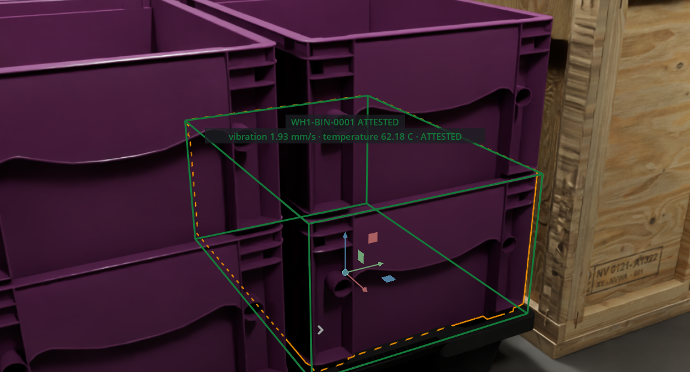
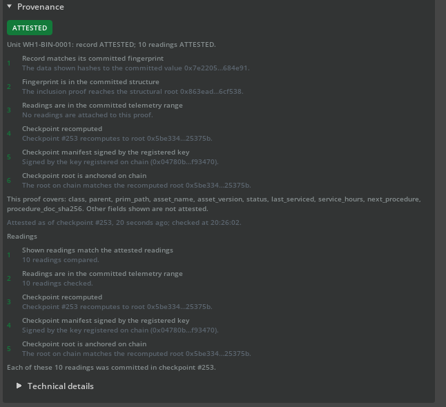
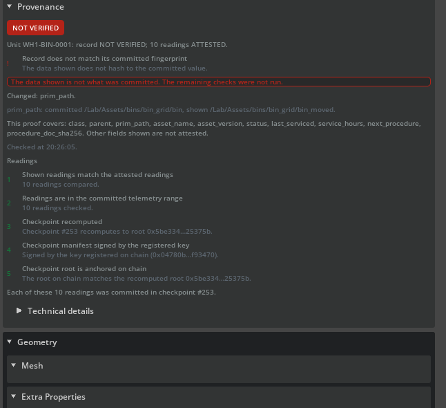
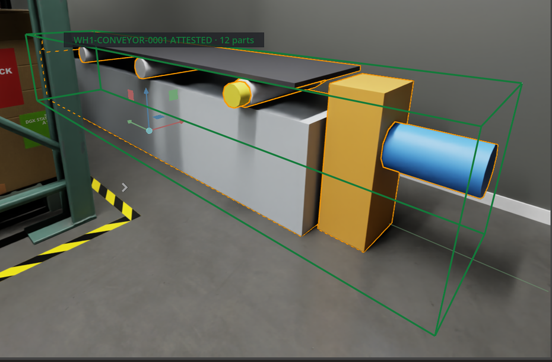
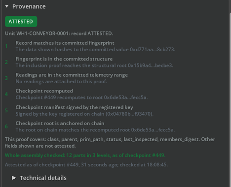
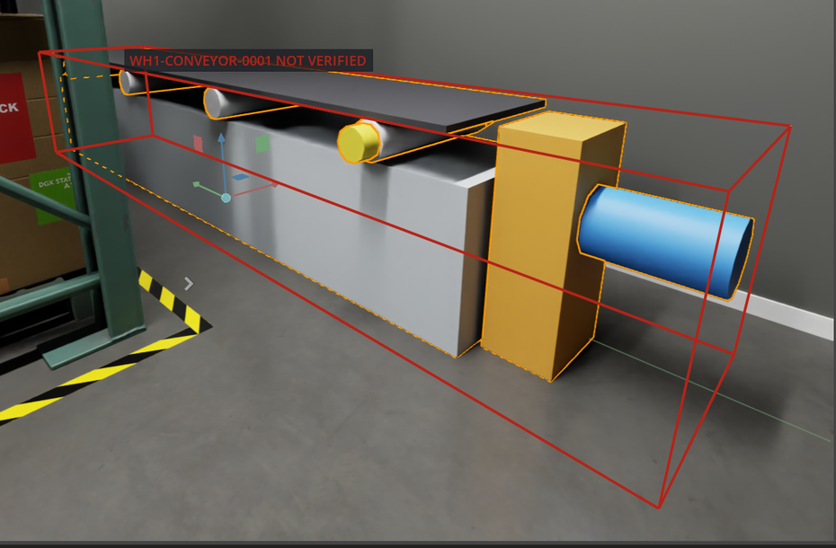
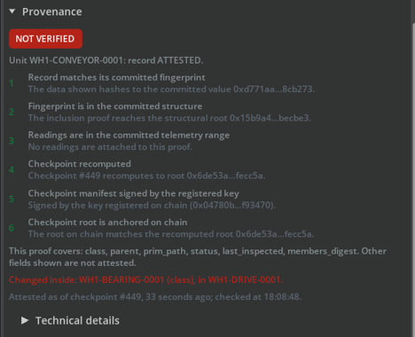

The value on your screen. Is it the value that was recorded?
Lune sits beside your digital twin, commits what flows through it, anchors a fingerprint on a public chain, and lets any viewer show whether a value still matches.
See it in a viewerA value travels a long way before it reaches you.
A digital twin draws on several systems at once. A maintenance system holds the asset records, sensors send readings, a scene describes where everything stands. The twin reaches each of them through adapters, caches, scheduled syncs and, now and then, an edit made by hand.
Each of those steps is a place where a value can change between the system that recorded it and the screen that shows it. A sync runs late. A cache keeps an old copy. Someone corrects a field in one place and not in the other.
Nobody is lying, and that is the problem. Nothing in the viewer can tell a faithful value from a drifted one. Both look the same on screen, and both are shown with the same confidence.
Which of these numbers would you sign your name to?
The verdict sits next to the value, where you already look.
This is a warehouse in a 3D viewer. Select a bin and a small badge appears above it. The badge checks the bin's record and its recent sensor readings against what Lune committed, and says whether they still match.



When the demo runs, it anchors a new checkpoint on Arbitrum Sepolia every 30 seconds. The badge is the same code in a browser, and any viewer can host it.
One check for the whole machine.
A conveyor is not one record. It is a drive, a belt and a chassis, and the drive is a motor, a gearbox and two bearings. Twelve parts in three levels, each with its own record.
Select the conveyor and Lune checks all of them at once. The viewer rebuilds the whole assembly from what the scene actually holds and verifies it in a single step. If every part is as it was committed, the box around the machine is green.



Change one bearing and the box turns red. The panel does not just say something is wrong. It names the part and where it sits.



It also tells a part that changed from one that moved, one that was added and one that is missing. The whole warehouse, 268 parts in five levels, checks the same way in under a second. How one check covers an assembly.
Three steps, and the last one runs in your viewer.
-
Commit
On a schedule, Lune takes every record and reading that has flowed through since the last time and folds them into one fingerprint, called a checkpoint. The data itself stays where it was.
-
Anchor
Lune writes the checkpoint's fingerprint to a public chain, signed by a key your organisation controls. From then on nobody can change it, and anyone can read it.
-
Verify
When a viewer shows a value, it recomputes the path from that value up to the anchored fingerprint and shows the verdict next to the value. The check runs in the viewer; Lune's own servers are not trusted for it.
Five kinds of thing, from the same warehouse.
- Records. The bin's entry in the maintenance system, including where it stands.
- Readings. The vibration and temperature values from the bin's sensors, committed in time-bounded groups with each checkpoint.
- Structure. Which bin grid each bin belongs to, so a bin re-homed to another grid shows as drift.
- Assemblies. A machine and everything in it, checked as one, with the changed part named.
- Documents. A procedure document for the bin can be attested by its fingerprint, so a changed copy no longer matches.
Beside your twin, not instead of it.
Lune can connect, through an adapter, to anything your twin already serves over REST. Two adapters exist: one for the Nextspace knowledge twin, and one for an OpenUSD scene with a maintenance API. The badge exists as an Omniverse Kit extension and as two web components. The chain is a configuration choice: the live deployment is on Arbitrum Sepolia, and Lune can anchor on any EVM chain.